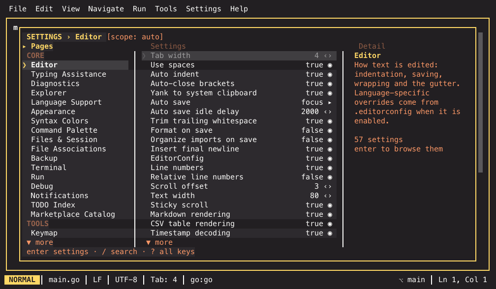
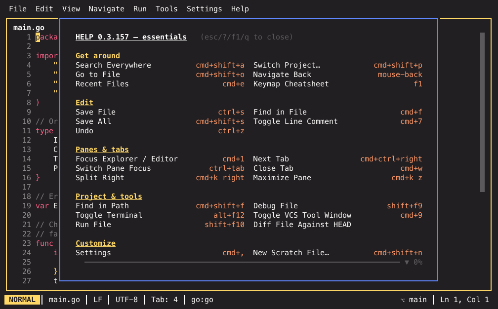
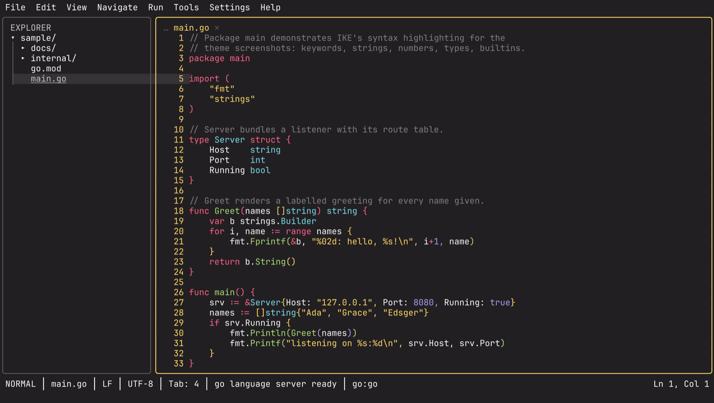

Customising IKE¶
Three things you will want to change: settings, keybindings, and the theme. All three are TOML underneath, and all three have a UI so you rarely have to write it by hand.
Settings¶
Cmd+, opens the settings panel. It is a three-column grid: categories on the left (grouped, with only the current group unfolded), the settings of the selected page in the middle with their current values, and a detail column on the right that explains the selected setting and holds its editor.
categories │ settings on · 4 · focus ▾ │ description + editor

The screenshot uses the monokai-pro theme — which is itself one row on the
Appearance page.
Tab walks the three columns, Up/Down (or j/k) move inside one,
Enter activates. On a narrow terminal the detail column becomes a band
under the list rather than disappearing. ? opens the full key list.
Values read as words: a toggle shows on or off, a chord sits in a keycap
like [cmd+k], an empty value is —, and a ▾ after a value means there is
a list of options behind it. Enums and integers can also be changed straight
on the row with Left/Right.
The detail column is never empty: with the categories focused it describes the
page, with a setting selected it shows the description, key · type · default,
the editor, and where the value currently comes from (set in user · writes to
user).
The panel and the file are the same thing seen two ways — nothing is panel-only, and nothing you write by hand is invisible to the panel. The settings reference lists every key, its type, default and allowed values.
Changes are staged, then applied¶
Editing a setting does not write it immediately. Changes collect in a
batch: the header counts them (● 3 changes · ctrl+s apply), each affected
page is marked in the category rail, and the detail column shows the selected
row's ● old → new. Editing a value back to where it started removes it from
the batch again.
Ctrl+S opens the diff panel — one line per change as
page · key · old → new:
| Key | What it does |
|---|---|
| Enter | Write the batch (one write, one reload) |
u |
Drop the selected line |
s |
Retarget the whole batch at another layer |
d |
Discard everything |
Esc with pending changes opens the same diff rather than throwing your
edits away silently. r (reset to the default) stages a removal like any
other change.
Settings whose whole point is how they look — the theme — preview live: moving through the option list re-themes the whole IDE on the highlighted entry, Esc puts the previous theme back, and only Enter stages a value that the usual Ctrl+S then writes. A preview is never written, and discarding a staged one undoes it the same way.
Custom pages are the exception: installing a plugin, choosing an interpreter or creating a virtualenv writes straight through, because those are actions, not values in a file.
Searching¶
/ searches the whole panel and keeps the grid working: the left column
becomes the pages that have hits, the middle lists every match as
Page › Title, and the right column is still the editor — so Enter sets
the value right there instead of navigating you somewhere. Tab opens the
match's own page on that row, Esc clears the query. The header reads
⌕ query · 7 hits · 5 pages.
The search reaches custom pages too: /python finds Toolchain › python and
Toolchain › New Python environment.
Which file gets written¶
built-in defaults < ~/.ike/settings.toml < <project>/.ike/settings.toml
The Scope column in the settings reference tells you which layer a given setting is written to when you change it in the panel. Most are user-scoped; a few that are inherently project-specific are not.
Editing by hand works exactly as well:
[editor]
relative_line_numbers = true
tab_width = 2
format_on_save = true
[theme]
name = "gruvbox"
$IKE_CONFIG_DIR relocates the user layer if you keep your dotfiles
elsewhere.
Arrays replace, they do not merge
A TOML array in a later layer replaces the earlier one wholesale. A
project-level [[tools.custom]] or [[snippets]] block hides your
user-level ones rather than adding to them.
Keybindings¶
Before rebinding anything, F1 shows what is bound today in your build — the same data the Keymap page edits:

The Keymap settings page lists the effective bindings as
chord · command, on the same grid as every other page.
| Key | What it does |
|---|---|
/ |
Filter the list |
| Enter | Capture a new chord for the selected row |
u |
Unbind |
r |
Reset to the shipped default |
i |
Import a JetBrains keymap XML |
z |
Unfold a folded run of numbered bindings |
The detail column carries what used to clutter the table: the command's title
and id, every chord bound to it with its context and layer (@default /
@user), and its conflict state — ✓ no conflicts, or the other commands
sharing the chord plus two free chords you could take instead.
Runs of numbered bindings fold into one row — alt+1 … alt+9 · Go to tab 1–9
▸ 9 — so nine near-identical lines do not bury the rest. z (or Enter on
the folded row) expands it, and the detail column meanwhile lists every
binding the row stands for. Filtering never folds: you see exactly what
matched.
Capturing is literal: press the chord you want and each key press appends a step, so multi-step chords like Cmd+K Cmd+S work. Enter confirms, Esc cancels.
If the chord is already taken, the capture dialog makes it a decision rather
than a yes/no: Replace & unbind the other (Enter), Pick a different
chord (p, which clears what you pressed and keeps capturing), or cancel.
Capturing a chord that not every terminal delivers gets you a warning rather
than a silent disappointment.
The list is honest about its edges: commands whose default chord you rebound
stay visible as (unbound) rows so you can give them a new one, and every
command with no binding at all — palette-only commands, your tool panes — is
listed at the end so it can be bound.
By hand¶
[keymap.bindings]
"cmd+7" = "editor.commentLine"
"ctrl+shift+k" = "editor.duplicateLine"
"cmd+d" = "" # unbind
The key is the chord, the value the command ID; an empty value unbinds. The commands reference lists every ID, including the ones with no default chord.
Importing a JetBrains keymap¶
Export your keymap from IntelliJ (Settings → Keymap → the gear → Export) and
run Import JetBrains Keymap XML… from the palette, or i on the Keymap
page.
IKE translates the Swing keystroke syntax into its own, maps IntelliJ action IDs onto IKE commands, and reports what it did: how many bindings landed, which action IDs it has no counterpart for, and which keystrokes it could not translate. Nothing is fatal — an unmappable entry is skipped and named.
An imported chord replaces the default rather than joining it: defaults for the imported commands that your export did not keep are unbound, so you end up with your keymap, not a merge of two.
Chords the terminal has to deliver
Rebinding cannot fix a chord your terminal swallows. If a new binding does nothing, check Terminal setup before assuming the rebind failed.
What is not in the keymap¶
The vim keys inside the editor — motions, operators, text objects,
ex-commands — are the editor's own and are not part of the keymap layer.
d, w, ciw and :w are not rebindable there.
Themes¶
One setting recolours everything — syntax, file tree, chrome:
[theme]
name = "tokyo-night"

Twenty-eight themes ship with IKE: default, tokyo-night, nord, gruvbox,
gruvbox-light, rose-pine, rose-pine-dawn, catppuccin-mocha,
catppuccin-latte, kanagawa, one-dark, solarized-dark,
solarized-light, dracula, darcula, intellij-light,
everforest-dark, everforest-light, ayu-dark, ayu-mirage,
ayu-light, github-dark, github-light, oxocarbon, monokai-pro,
zenburn, high-contrast-dark and high-contrast-light. The last two are
the accessibility tier: they target WCAG AAA (7:1) everywhere and give up the
dimmed comment/hint layer entirely, for low-vision use, bright rooms and
washed-out projectors. Plugins can register more. The README shows a
screenshot of every theme.
Switching live is easiest from the palette — type : and then Theme. The
Appearance settings page lists them too, and re-themes the whole IDE — open
files included, syntax colours and all — as you move through the list. Nothing
is written until you press Enter and apply; Esc restores the theme you
came in with. Every row of that list is its own mini-preview: the theme's name is
painted in that theme's background and foreground, and the strip of colour
chips at the end of the row shows its background, foreground, accent, keyword
and string colours — so themes compare at a glance without applying them one
by one. The selected row is marked with the ❯ chevron and an underline
rather than a colour band, so the preview stays visible under the cursor.
Tool panes get the theme's colours in their environment, so a TUI program that reads them follows along.
Recolouring single syntax captures¶
A theme you like except for one colour does not have to be forked. The
Syntax Colors page (right behind Appearance) lists every syntax capture
the active theme defines — plus the six rainbow.N bracket slots and
bracket.unmatched, the colour a bracket with no partner is underlined in —
with a swatch in the colour that actually resolves, the capture name and the
token in use. (derived) marks a slot with no token of its own.
| Key | What it does |
|---|---|
| Enter | Pick from the named colours, or the capture's theme default |
e |
Type a colour token directly |
r |
Remove the override |
The detail column says what the capture paints, names the config key, and tells you whether the colour comes from the theme or from your config.
Overrides live under [theme.captures] and are written at user scope:
[theme.captures]
comment = "#7f8c98"
"keyword.control" = "magenta"
"rainbow.0" = "42"
A token is a hex colour (#rrggbb or #rgb), a named colour, or an ANSI
palette index.
These write through immediately rather than being staged — choosing a colour you cannot see would be pointless. An unparseable token is rejected instead of silently rendering as your terminal default. Captures your config names that the theme does not define stay listed, so an override can never become unreachable.
Plugins¶
WASM plugins can add commands, themes and languages. The Plugins settings page lists what is installed and toggles each one; the marketplace page installs new ones.
Disabling a plugin is written as:
[plugins.some-plugin]
enabled = false
A plugin's own settings, where it has any, appear as their own settings page.
IKE checks installed plugins against the marketplace catalog once a day in the
background and tells you how many updates are waiting; u on the Marketplace
page installs them all at once. A new version that asks for more
capabilities than the one you installed is held back and updated only after
you confirm the added capabilities. Turn the check off with
marketplace.auto_check = false (Settings ▸ Marketplace Catalog).
Where it all ends up¶
| Path | What |
|---|---|
~/.ike/settings.toml |
Your settings, keybindings, theme |
<project>/.ike/settings.toml |
Project overrides |
$IKE_CONFIG_DIR |
Relocates the user layer |
Related¶
- Settings reference — every key
- Keybindings reference — every default binding
- Commands reference — every command ID